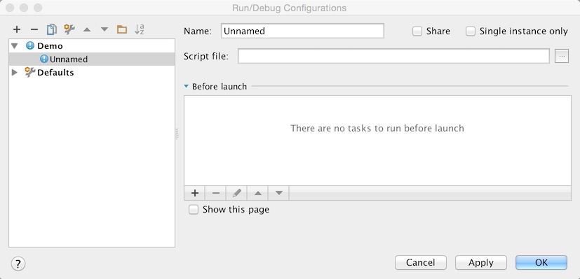
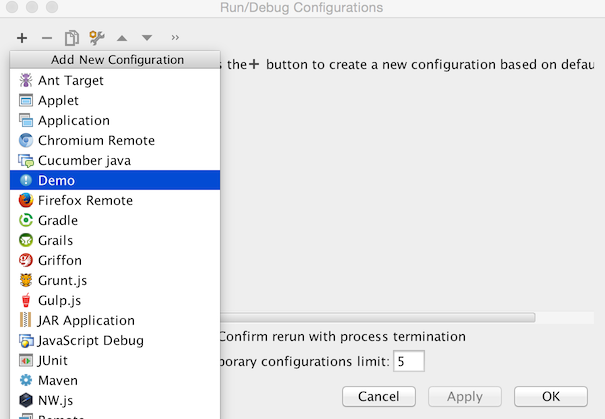

Run Configurations
These series of steps show how to register and implement a simple Run Configuration. Run Configurations are used to run internal and external processes from within IntelliJ Platform based products. To get familiar with the concept of a Run Configuration refer Run/Debug Configuration section of IntelliJ IDEA Web Help
Pre-requirements
Create an empty plugin project. See Creating a Plugin Project.
1. Register a new ConfigurationType
Add new configurationType extension to the plugin.xml
<extensions defaultExtensionNs="com.intellij">
<configurationType implementation="org.jetbrains.sdk.runConfiguration.DemoRunConfigurationType"/>
</extensions>
2. Implement ConfigurationType
Implement
ConfigurationType
interface registered in the Step 1.
public class DemoRunConfigurationType implements ConfigurationType {
@Override
public String getDisplayName() {
return "Demo";
}
@Override
public String getConfigurationTypeDescription() {
return "Demo Run Configuration Type";
}
@Override
public Icon getIcon() {
return AllIcons.General.Information;
}
@NotNull
@Override
public String getId() {
return "DEMO_RUN_CONFIGURATION";
}
@Override
public ConfigurationFactory[] getConfigurationFactories() {
return new ConfigurationFactory[]{new DemoConfigurationFactory(this)};
}
}
3. Implement a ConfigurationFactory
Implement a new
ConfigurationFactory
through which custom run configurations will be created.
public class DemoConfigurationFactory extends ConfigurationFactory {
private static final String FACTORY_NAME = "Demo configuration factory";
protected DemoConfigurationFactory(ConfigurationType type) {
super(type);
}
@Override
public RunConfiguration createTemplateConfiguration(Project project) {
return new DemoRunConfiguration(project, this, "Demo");
}
@Override
public String getName() {
return FACTORY_NAME;
}
}
4. Implement a Run Configuration
To make your changes visible from the UI, implement a new Run Configuration.
Note: In most of the cases you can derive a custom Run Configuration class from the
RunConfigurationBase.
If you need to implement specific settings externalization rules and I/O behaviour,
use
RunConfiguration
interface.
public class DemoRunConfiguration extends RunConfigurationBase {
protected DemoRunConfiguration(Project project, ConfigurationFactory factory, String name) {
super(project, factory, name);
}
@NotNull
@Override
public SettingsEditor<? extends RunConfiguration> getConfigurationEditor() {
return new DemoSettingsEditor();
}
@Override
public void checkConfiguration() throws RuntimeConfigurationException {
}
@Nullable
@Override
public RunProfileState getState(@NotNull Executor executor, @NotNull ExecutionEnvironment executionEnvironment) throws ExecutionException {
return null;
}
}
5. Create and Implement Run Configuration UI Form
Create a new [UI form] that defines, how an inner part of the new Run Configuration should look like. Default Run Configuration will be looking like this:

6. Bind the UI Form
The UI Form should be bound with a Java class responsible for handling UI components logic.
public class DemoSettingsEditor extends SettingsEditor<DemoRunConfiguration> {
private JPanel myPanel;
private LabeledComponent<ComponentWithBrowseButton> myMainClass;
@Override
protected void resetEditorFrom(DemoRunConfiguration demoRunConfiguration) {
}
@Override
protected void applyEditorTo(DemoRunConfiguration demoRunConfiguration) throws ConfigurationException {
}
@NotNull
@Override
protected JComponent createEditor() {
return myPanel;
}
private void createUIComponents() {
myMainClass = new LabeledComponent<ComponentWithBrowseButton>();
myMainClass.setComponent(new TextFieldWithBrowseButton());
}
}
7. Compile and Run the Plugin
Refer to Running and Debugging a Plugin.
After going through the steps described above you can create a custom Run Configuration from your plugin.
